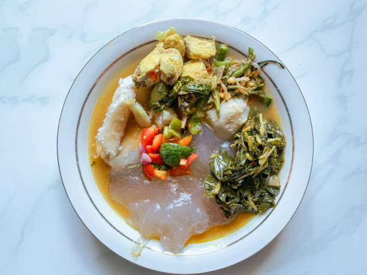

Galeri Makanan Tradisional Khas Indonesia Timur

Papeda
Papeda adalah makanan pokok masyarakat Papua dan Maluku yang terbuat dari sagu. Dikenal karena teksturnya yang lengket seperti lem, papeda biasanya disajikan dengan ikan kuah kuning. Kuliner ini mencerminkan kearifan lokal dalam memanfaatkan pohon sagu sebagai sumber karbohidrat.

Ayam Taliwang
Ayam Taliwang berasal dari Desa Taliwang, Sumbawa. Masakan ini populer karena rasa pedas gurih khas Lombok, dan kini menjadi ikon kuliner NTB. Biasanya dimasak dari ayam kampung muda.

Ikan Kuah Kuning
Masakan ini merupakan hasil akulturasi antara budaya lokal dengan pengaruh luar, menggunakan kunyit sebagai pewarna alami. Biasanya disajikan bersama papeda.